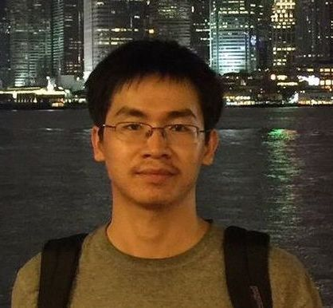

|  |
Email: chuxuzhang[at]gmail[dot]com
|
|
Brandeis is a private research university in the Boston area - one of the most important metropolitan regions of economy, culture, and education in USA. It was founded in 1948 as a non-sectarian, coeducational institution sponsored by the Jewish community. In 2018, it had a total enrollment of 5,800 students on its suburban campus spanning 235 acres (95 hectares). The institution offers more than 43 majors and 46 minors, and two-thirds of undergraduate classes have 20 students or fewer. Alumni and affiliates of the university include several recipients of Nobel Prize, Fields Medalist, as well as foreign heads of state, congressmen, governors, diplomats.
According to the U.S. News 2020 best national universities ranking, Brandeis ranks 40 in overall ranking and 91 in computer science ranking.
|